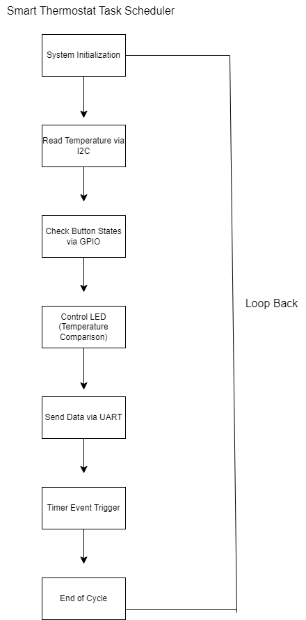

Smart Thermostat
A hardware-integrated thermostat prototype built on the Texas Instruments CC3220x LaunchPad, combining real-time temperature sensing, physical user input, heating-state control, task scheduling, and simulated server communication.
Connecting software logic to physical hardware.
The Smart Thermostat project was designed as a working embedded-system prototype using the Texas Instruments CC3220x LaunchPad.
The system continuously monitors ambient temperature, accepts target-temperature adjustments through physical buttons, determines whether heating should be active, reflects that state through an LED, and sends simulated system data through UART.
The project required coordinating several hardware peripherals within one responsive software system rather than treating temperature sensing, user input, output control, and communication as isolated features.
A repeating control cycle coordinates the system.
The thermostat uses a task-oriented control flow that determines when each hardware and application operation should occur.
After system initialization, the software reads the temperature sensor, evaluates button input, updates the heating indicator, reports system information through UART, and then waits for the next scheduled cycle.
A timer event controls the interval between cycles so the system repeatedly returns to the sensor-reading stage and remains responsive to environmental and user changes.

Task scheduler designed for the thermostat's repeating control cycle.
Multiple communication interfaces working together.
The project integrates several hardware interfaces available through the TI platform and its SDK. Each protocol serves a different responsibility within the thermostat.
I2C / TEMPERATURE SENSOR
I2C communication retrieves live temperature readings from the TMP006 digital temperature sensor and supplies the environmental input used by the thermostat logic.
GPIO / USER INPUT
GPIO interfaces detect physical button presses, allowing the user to increase or decrease the desired temperature setpoint.
GPIO / HEATING OUTPUT
An LED represents the heating element. Its state is updated according to the relationship between current temperature and the user-selected setpoint.
UART / DATA REPORTING
UART communication simulates sending thermostat data to an external server, representing how a connected IoT device could report information to a cloud service or application.
Coordinating timing without a heavyweight operating system.
A central challenge of the project was coordinating tasks with different responsibilities and timing requirements in a constrained embedded environment.
Rather than relying on a desktop-style operating system to manage application work, the project uses a lightweight scheduling approach built around TI NoRTOS and application logic.
The scheduler establishes a predictable execution sequence: initialize peripherals, obtain a fresh temperature reading, inspect the buttons, calculate the required heating state, update the LED, transmit system information, and then wait until the next timer-triggered cycle.
Keeping these responsibilities separated made it easier to reason about timing and helped prevent one hardware operation from becoming tightly coupled to another.
Evaluating the hardware platform, not just programming it.
The project also included a technical comparison of microcontroller platforms from Texas Instruments, Microchip, and Freescale/NXP.
The evaluation considered peripheral support, available memory, wireless connectivity, development tooling, and how much additional complexity each platform would introduce for a connected thermostat application.
The CC3220x provided the strongest overall integration for this use case, including built-in Wi-Fi, security capabilities, peripheral support, and a mature development ecosystem.
Microchip offered strong performance and broad hardware support, but wireless connectivity could require additional configuration and integration effort.
The platform provided capable architecture and processing options, but the lack of equivalent built-in wireless support increased hardware and software complexity for this particular design.
Designed with connected-device expansion in mind.
Although the prototype uses UART to simulate remote communication, the CC3220x platform provides integrated Wi-Fi support that makes the architecture relevant to a larger IoT system.
The platform includes 802.11 wireless capability and secure communication features that could support future integration with cloud services, mobile applications, remote monitoring, or additional connected sensors.
Its available Flash and SRAM also provide space for extending the firmware beyond the prototype's current control loop.
Firmware built with TI's embedded development tools.
Development was completed using Texas Instruments Code Composer Studio and TI's software-development resources for the CC3220x platform.
The firmware initializes board peripherals and drivers, starts the lightweight NoRTOS environment, and then launches the application thread responsible for thermostat behavior.
int main(void)
{
Board_init();
/* Start TI's lightweight NoRTOS environment */
NoRTOS_start();
/* Launch the main thermostat application */
mainThread(NULL);
while (1) {}
}Separating board initialization from the application's main thread gives the firmware a clearer startup sequence and keeps hardware setup distinct from ongoing thermostat logic.
Reliability depends on more than getting the happy path to work.
Successfully integrating the temperature sensor, physical controls, LED output, timer behavior, and UART communication required careful coordination between software state and hardware behavior.
TIMING
Each operation needed to occur often enough to keep the thermostat responsive without creating unnecessary work inside the control loop.
I/O COORDINATION
Sensor readings, user input, state calculations, and output updates needed a predictable sequence so the system acted on current information.
DEBUGGING
Hardware/software integration required debugging both application logic and communication with physical peripherals rather than examining software output alone.
ROBUSTNESS
The prototype identified opportunities for stronger error handling around failed sensor reads and UART communication in a future production-oriented version.
What worked, and what I would improve next.
KEY ACCOMPLISHMENT
The strongest result was successfully integrating I2C, UART, GPIO, timing logic, user controls, and system state into one functioning embedded application.
SCHEDULER IMPROVEMENT
A future revision could move selected operations from polling toward interrupt-driven behavior where appropriate, reducing unnecessary work and improving responsiveness.
ERROR HANDLING
Production-oriented firmware should explicitly handle sensor communication failures, invalid readings, UART transmission errors, and other peripheral edge cases.
DEVELOPMENT RESOURCES
Code Composer Studio, TI documentation and developer resources, embedded-community repositories, and draw.io supported implementation, debugging, and system-design planning.
Structured to support extension instead of one-off behavior.
The project separates major responsibilities such as sensor communication, input handling, output control, scheduling, and data transmission rather than placing every behavior into a single tightly coupled routine.
Consistent naming, comments, and modular functions make the application easier to understand and provide clear points where future features could be introduced.
The same foundation could be extended with additional environmental sensors, new control outputs, remote configuration, mobile connectivity, cloud reporting, or stronger fault-handling behavior without redesigning the entire application.
A complete embedded control prototype.
The final system demonstrates an end-to-end embedded workflow: obtaining information from physical hardware, processing that information through application logic, reacting through physical output, responding to user input, and communicating system state externally.
The project strengthened my understanding of real-time application design, task scheduling, peripheral communication, hardware/software debugging, modular firmware structure, and the constraints involved in developing software for connected devices.
View Repository on GitHub